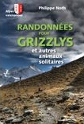

Hikes for Loners
In the Alps, solitude is not a lack — it is the destination. Trails chosen for their silence, not their crowds.


The Philosophy
The concept behind Hikes for Loners — Randonnées pour grizzlys et autres animaux solitaires in French — is straightforward: some people hike to see people, others hike to stop seeing them. This series is for the latter.
Each route is chosen not just for scenery or technical interest, but for the near-certainty of walking alone. The experience of mountain silence — no voices, no poles clicking, no one asking you how far it is to the top — is considered part of the itinerary itself.
As the author Nicolas Bouvier once wrote, slowness is a supreme luxury. These guides are built around that idea: long days, late returns, unhurried meals.
The Books
Two volumes published by Éditions Slatkine, Geneva. Each presents 25 itineraries rated with a grizzly index — a measure of the expected tranquility of the trail, from occasional passers-by to genuine solitude.

25 itineraries in the Valais Alps and the Aosta Valley, selected for their solitude. Each route includes start point, difficulty, duration, elevation profile, and map extracts. The grizzly index rates expected peacefulness on each trail — from quiet to genuinely empty.
View on slatkine.com →
A second volume covering the Alps and pre-Alps of the Vaud, Fribourg, and Berne cantons. Another 25 routes with a grizzlitude index, strategies for maximizing your chances of real mountain silence, and practical planning advice for the solitude-seeking hiker.
View on slatkine.com →